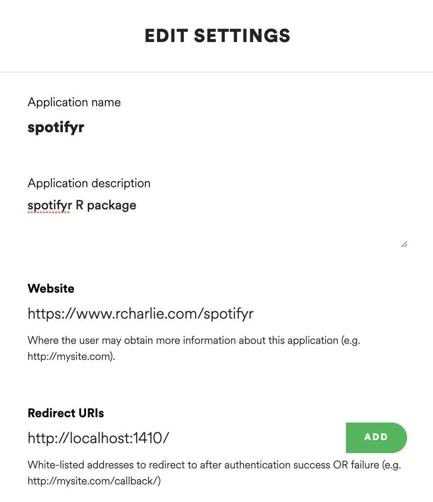
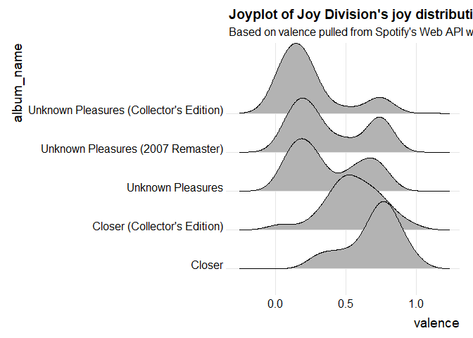

Overview
spotifyr is an R wrapper for pulling track audio features and other information from Spotify’s Web API in bulk. By automatically batching API requests, it allows you to enter an artist’s name and retrieve their entire discography in seconds, along with Spotify’s audio features and track/album popularity metrics. You can also pull song and playlist information for a given Spotify User (including yourself!).
Installation
CRAN version 2.2.3 (recommended)
install.packages('spotifyr')Development version
devtools::install_github('charlie86/spotifyr')Authentication
First, set up a Dev account with Spotify to access their Web API here. This will give you your Client ID and Client Secret. Once you have those, you can pull your access token into R with get_spotify_access_token().
The easiest way to authenticate is to set your credentials to the System Environment variables SPOTIFY_CLIENT_ID and SPOTIFY_CLIENT_SECRET. The default arguments to get_spotify_access_token() (and all other functions in this package) will refer to those. Alternatively, you can set them manually and make sure to explicitly refer to your access token in each subsequent function call.
Sys.setenv(SPOTIFY_CLIENT_ID = 'xxxxxxxxxxxxxxxxxxxxx')
Sys.setenv(SPOTIFY_CLIENT_SECRET = 'xxxxxxxxxxxxxxxxxxxxx')
access_token <- get_spotify_access_token()Authorization Code Flow
For certain functions and applications, you’ll need to log in as a Spotify user. To do this, your Spotify Developer application needs to have a callback url. You can set this to whatever you want that will work with your application, but a good default option is http://localhost:1410/ (see image below). For more information on authorization, visit the offical Spotify Developer Guide.

Usage
What Was the Beatles’ Favorite Key?
library(spotifyr)
beatles <- get_artist_audio_features('the beatles')
library(dplyr)
library(purrr)
library(knitr)
beatles %>%
count(key_mode, sort = TRUE) %>%
head(5) %>%
kable()| key_mode | n |
|---|---|
| D major | 115 |
| C major | 111 |
| G major | 90 |
| A major | 80 |
| E major | 68 |
Get your most recently played tracks
library(lubridate)
#> Warning: package 'lubridate' was built under R version 4.1.1
get_my_recently_played(limit = 5) %>%
mutate(
artist.name = map_chr(track.artists, function(x) x$name[1]),
played_at = as_datetime(played_at)
) %>%
select(
all_of(c("track.name", "artist.name", "track.album.name", "played_at"))
) %>%
kable()| track.name | artist.name | track.album.name | played_at |
|---|---|---|---|
| Look For Me (I’ll Be Around) | Neko Case | Blacklisted | 2021-11-01 17:16:12 |
| Don’t Forget Me | Neko Case | Middle Cyclone | 2021-11-01 17:12:50 |
| Magpie to the Morning | Neko Case | The Worse Things Get, The Harder I Fight, The Harder I Fight, The More I Love You (Deluxe Edition) | 2021-11-01 17:09:42 |
| Margaret vs. Pauline | Neko Case | Fox Confessor Brings The Flood (Bonus Track Version) | 2021-11-01 17:06:45 |
| Runnin’ Out Of Fools | Neko Case | Blacklisted | 2021-11-01 17:03:52 |
Find Your All Time Favorite Artists
get_my_top_artists_or_tracks(type = 'artists',
time_range = 'long_term',
limit = 5) %>%
select(.data$name, .data$genres) %>%
rowwise %>%
mutate(genres = paste(.data$genres, collapse = ', ')) %>%
ungroup %>%
kable()| name | genres |
|---|---|
| Japanese Breakfast | art pop, eugene indie, indie pop, philly indie |
| Balthazar | belgian indie, belgian rock, dutch indie, ghent indie |
| Haley Bonar | melancholia, stomp and holler |
| Angus & Julia Stone | australian indie folk, indie folk, stomp and holler |
| Buildings Breeding | indie fuzzpop |
Find your favorite tracks at the moment
get_my_top_artists_or_tracks(type = 'tracks',
time_range = 'short_term',
limit = 5) %>%
mutate(
artist.name = map_chr(artists, function(x) x$name[1])
) %>%
select(name, artist.name, album.name) %>%
kable()| name | artist.name | album.name |
|---|---|---|
| Can’t Walk That Back | Tristen | Can’t Walk That Back |
| You’re Too Weird | Fruit Bats | Tripper |
| California (All the Way) | Luna | Bewitched |
| Don’t Blame Your Daughter (Diamonds) | The Cardigans | Super Extra Gravity (Remastered) |
| Born In The ’70s | Fruit Bats | Spelled In Bones |
What’s the most joyful Joy Division song?
My favorite audio feature has to be “valence,” a measure of musical positivity.
joy <- get_artist_audio_features('joy division')| track_name | valence |
|---|---|
| Passover - 2020 Digital Master | 0.946 |
| Passover - 2007 Remaster | 0.941 |
| Colony - 2020 Digital Master | 0.829 |
| Colony - 2007 Remaster | 0.808 |
| Atrocity Exhibition - 2020 Digital Master | 0.790 |
Now if only there was some way to plot joy…
Joyplot of the emotional rollercoasters that are Joy Division’s albums
library(ggplot2)
library(ggridges)
ggplot(
joy,
aes(x = valence, y = album_name)
) +
geom_density_ridges() +
theme_ridges() +
labs(title = "Joyplot of Joy Division's joy distributions",
subtitle = "Based on valence pulled from Spotify's Web API with spotifyr")
Sentify: A Shiny app
This app, powered by spotifyr, allows you to visualize the energy and valence (musical positivity) of all of Spotify’s artists and playlists.
Dope Stuff Other People Have Done with spotifyr
The coolest thing about making this package has definitely been seeing all the awesome stuff other people have done with it. Here are a few examples:
Exploring the Spotify API with R: A tutorial for beginners, by a beginner, Mia Smith
Blue Christmas: A data-driven search for the most depressing Christmas song, Caitlin Hudon
Sente-se triste quando ouve “Amar pelos dois”? Não é o único (Do you feel sad when you hear “Love for both?” You’re not alone), Rui Barros, Rádio Renascença
Using Data to Find the Angriest Death Grips Song, Evan Oppenheimer
Hierarchical clustering of David Bowie records, Alyssa Goldberg
tayloR, Simran Vatsa
Code of Conduct
Please note that the spotifyr project is released with a Contributor Code of Conduct. By contributing to this project, you agree to abide by its terms.